内在人格とは
内在人格とは、キャラに追加能力を与えることができ、与え方によって様々な特徴を持つことができる。マルチ戦やランク戦で遊ぶ前に必ず人格を採用して戦いましょう！！
内在人格の基本
最大で130ポイントを振り分けることができ、人格ツリーから自由に構成できます。
内在人格解説（ハンター編）
上下左右に分けて解説していきます！！強さによって色を分けていくのでぜひ参考にしてください。「閉鎖空間」・「裏向きカード」・「引き留める」・「傲慢」は強すぎるためどれか2つまでしか取れないので注意！
⬆ 上人格（解読妨害・チェイス）
閉鎖空間
| 効果 | ハンターが乗り越えた窓枠は20秒間封鎖され、サバイバーは利用できなくなる。 |
|---|---|
| 備考 | 封鎖中でもハンターは通行可能。封鎖された窓を乗り越えると封鎖解除。 |
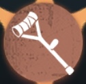
悪化
| 効果 | 負傷状態のサバイバーの解読・治療・破壊の速度を5％低下させる。 |
|---|---|
| 備考 | 1ダメージ未満の状態やダウン中は対象外。 |

執念
| 効果 | 追撃状態を離脱後、周囲16m以内に行動可能なサバイバーがいない時、移動速度+5%。 |
|---|---|
| 持続 | 最大15秒（再度追撃・風船持ち・近接で解除） |
枯死
| 効果 | ロケットチェアから10m以上離れた位置から攻撃した際、サバイバーの被ダメ加速効果を15/25/35%減少。 |
|---|---|
| 主な用途 | 中距離キャンプや、瞬間移動と併用した救助狩り。 |

パニック
| 効果 | 負傷・ダウン・拘束中のサバイバー1人ごとに、すべてのサバイバーの解読・治療・破壊速度を2.5%低下。 |
|---|---|
| 最大効果 | サバイバー3人が影響を受けている場合、合計9%低下。 |

飢餓
| 効果 | ゲーム開始から50秒間、自身の16m以内にサバイバーがいない場合、全サバイバーの解読速度が12%低下。 |
|---|---|
| 範囲 | ハンターを中心とした18m |
翻弄
| 効果 | ダウンしたサバイバーを持ち上げて風船状態にするまでの時間を20％短縮。 |
|---|---|
| 短縮量 | 約0.3秒（ハンターにより差あり） |
破壊欲
| 効果 | 倒れた板を破壊する速度が20/30/40%上昇する。 |
|---|

狂暴
| 効果 | ロケットチェアに拘束されているサバイバーが居る時、攻撃回復速度が10/15/20％上昇。 |
|---|

怒り
| 効果 | スタンや風船もがきによる行動不能からの回復速度が7/15/20％上昇。 |
|---|
⬇ 下人格（攻撃・キャンプ）
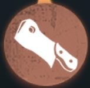
引き留める
| 効果 | 通電後、120秒間すべての通常攻撃の一撃でサバイバーがダウン。 |
|---|

慣性
| 効果 | 攻撃の回復速度が5％上昇。 |
|---|
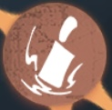
焼入れ効果
| 効果 |
ゲーム開始から50秒経過時、 『傲慢』以外の方法で存在感を獲得していない場合、 5秒間、すべてのサバイバーを強調表示する。 |
|---|
発動条件と仕様を把握しておくことが重要。
愚弄
| 効果 | ロケットチェアに拘束されているサバイバーがいる間、移動速度が3/4/5％上昇。 |
|---|

枯木を倒す
| 効果 | 異なるサバイバーを2/3/4人ダウンさせると、攻撃回復速度が5%/10%/15%上昇（永続）。 |
|---|
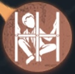
コントロール
| 効果 | ロケットチェアに拘束されているサバイバーの脱落速度を3/6/9%上昇させる。 |
|---|

巨大ペンチ
| 効果 | 風船に縛られたサバイバーの抵抗速度が5/10/15%低下する。風船解除後、全サバイバーの解読速度が8秒間15%/20%/25%低下。 |
|---|
カーニバル
| 効果 | 脱出ゲートを解読可能になってから120秒間、攻撃回復速度が5/7/10％、移動速度が3/4/5％上昇する。 |
|---|
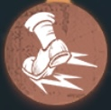
衝動
| クールタイム | 5秒 |
|---|---|
| 効果 | 溜め攻撃中、移動速度が8％上昇する。 |
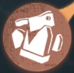
生還者無し
| 効果 | ダウンしたサバイバーの25メートル以内に行動可能なサバイバーがいると、1人につき同範囲にいるハンターの攻撃回復速度が10％上昇。最大3人まで重複。 |
|---|
⬅ 左人格（バフ・デバフ効果）
傲慢
| 効果 | 対戦開始から5秒経過するごとに存在感を自動で50獲得し、最大で1000まで自動増加。存在感が1段階に達した後は、傲慢以外で獲得した存在感が1000未満なら毎秒6.6、1000以上で毎秒3.3に低下。 |
|---|
鹿狩り
| 効果 | 18メートル以内のダウン状態のサバイバーを強調表示する。 |
|---|
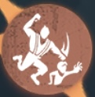
支配欲
| 効果 | 自然垂直落下の着地後、3秒間移動速度+10%（クールタイム10秒） |
|---|
忍耐力
| 効果 | 自身が受けるノックバック効果が12% / 18% / 32%、減速効果が12% / 18% / 24%減少する。 |
|---|
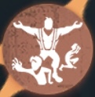
表現欲
| 効果 |
ロケットチェアに拘束されたサバイバーがいる場合は効果が適用されない。 通常攻撃が命中しなかった時の攻撃アクション時間が10%短縮。 自身の周囲24メートル内に行動可能なサバイバー1名につき、追加で15%早まる。最大40%まで重複可能。 |
|---|

警戒
| 効果 |
最初の3台の暗号機解読完了時に、毎回10秒間自身の移動速度が9%、木の板破壊速度が15%上昇。効果は重複可能。 ただし、サバイバーがロケットチェアに拘束されると効果はその試合中無効になる。 |
|---|

幽閉の恐怖
| 効果 |
ゲート通電後の20秒以内に、フィールド上に行動可能なサバイバーが 4人または3人存在している場合（ダウン・風船・ロケットチェア拘束を除く）、 ゲート開放速度が65%（4人時）/10%（3人時）ダウンする。 |
|---|
後遺症
| 効果 |
ダウンしたサバイバーの自己治癒上限が10%/20%/30%低下し、ダウン時の自己治癒速度が8%/12%/16%低下する。 ただし、サバイバーが『起死回生』を発動できる間は適用されない。 |
|---|

掃除屋
| 効果 | 24/28/32メートル以内の治療中および治療を受けているサバイバーを強調表示し、その治療時間を25%/40%/60%増加させる。 |
|---|
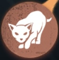
獲物を追う
| 効果 | 持続的にサバイバーを11/9/7秒追撃すると、移動速度と板・窓の操作速度の上昇効果が10%増加。追撃に失敗、操作・攻撃・スキル使用や制御効果を受けると解除される。 |
|---|
➡ 右人格（通電後）
裏向きカード
| 効果 | 対戦開始から120秒経過後、補助特質を1度だけ変更可能。変更前の補助特質がクールタイム中の場合は、残りクールタイムの割合に応じて変更後のスキルにも適用される。 |
|---|

封鎖
| 効果 | ゲーム開始時、自身から最も遠い1台の暗号機を30秒間封鎖し、サバイバーはその暗号機を解読できない。 |
|---|
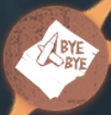
アナウンス
| 効果 | 脱出ゲートが開ける状態になると、全サバイバーを5秒間強調表示する。 |
|---|
狩猟本能
| 効果 | 存在感1段階目の開放まで有効。追撃状態でない間、健康状態のサバイバー1人につき移動速度が1/1.5/2％上昇。 |
|---|
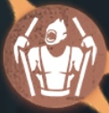
檻の獣の争い
| 効果 | 気絶または強力なコントロール状態になってから15秒以内に再度同種の状態に陥ると、回復速度が20％上昇。効果は最大3回まで重複。 |
|---|

指名手配
| 効果 | ロケットチェアに拘束中、健康・負傷状態のサバイバーが3人以上いると、その中からランダムで1人を強調表示。10秒/30秒/救助後20秒間まで継続。移動速度は2/1/0％低下。 |
|---|
崩壊
| 効果 | 通常攻撃や一部スキル攻撃が命中したサバイバーの次の自己治癒（ダウン時の自己治癒は除く）や他者からの治療時間を20％/30％/40％増加させる。 |
|---|
おもてなし
| 効果 | サバイバーを風船状態にしている間、移動速度が4％/6％/8％上昇する。 |
|---|

中毒症
| 効果 | 自身の周囲24メートル以内にロケットチェアに拘束されていないサバイバーが2/3/4人いる時、気絶などの強力なコントロール効果を受けた後の回復速度が8%/24%/40%上昇する。 |
|---|---|
| 追加効果 | 気絶状態に陥った時、周囲24メートル以内のサバイバーに4秒間持続する8～16%の減速効果を与える（距離が遠いほど減速値が上昇）。 |
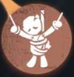
懐旧癖
| 効果 | 脱落したサバイバーが1名以上いると無効。自身の32メートル範囲内でサバイバーがロケットチェアから救助されると、救助されたサバイバーの位置を12秒間表示する。対象と自身の距離が12メートル以上離れている場合、対象のいる方向へ移動中の移動速度が最大10%増加（距離が遠いほど速くなる）。効果時間中に対象がダウンダメージを受けると効果終了。 |
|---|
まとめ
ハンターの内在人格は、サバイバーを追い詰め勝利を掴むための重要な戦略要素です。 この記事で紹介した人格を参考に、使用するハンターの特性やマップに合わせた最適な構成を見つけてください！
🎯 重要ポイント
- 閉鎖空間・裏向きカード・引き留める・傲慢など強力な人格は2つまでしか選べない制限に注意
- スタンサバイバーが多い時、ハンターはスタン軽減人格が有効。スタンサバイバーがいない時はチェイス型人格と相性が良い
- 初心者はまず裏向きカードと引き留めるを優先的に取得しよう
実践のコツ
人格構成に正解はありません。ランク戦やマルチ戦で実際に試しながら、 使用するハンターに合った組み合わせを見つけることが上達への近道です。 マップの特性や相手のサバイバー構成を見て、柔軟に人格を変えられるようになりましょう！

サバイバー編も見る
ハンターとは異なる視点で戦うサバイバーの内在人格について詳しく解説しています
サバイバー内在人格完全解説を見る
みんなのコメント
まだコメントはありません。最初のコメントを書いてみませんか？